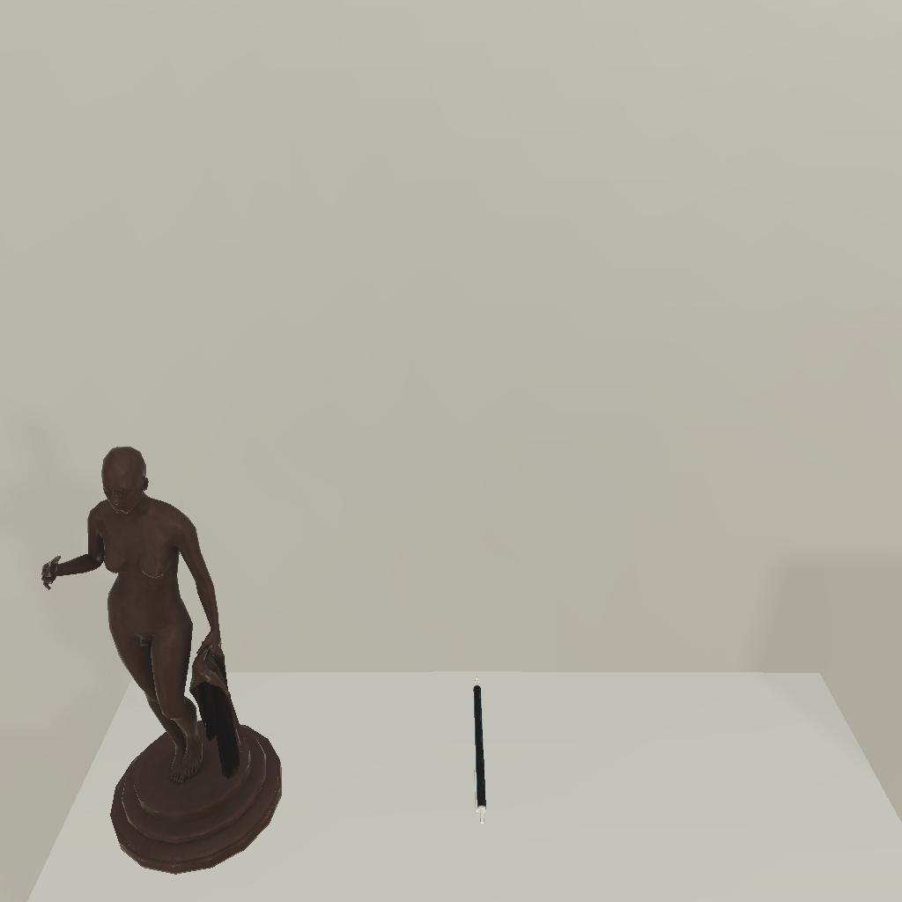

---------------------------------------------------------task: 4---------------------------------------------------------
--------------------------------------------------------------------------------------------------------------------------------------------------------------------
--------------------------------------------------------------------------------------------------------------------------------------------------------------------
Step:--------------------------------------------------------------------------7-------------------------------------------------------------------------------
----------------------------------------
VLM Prompt:
Image1:
Image2:
Image3:
**Instruction**
1. Analyze the provided images to identify all visible household objects and compare the difference between images (e.h. whether the object is opened or not and taken on hand or not), focusing on those relevant to the task description "examine the statue with the floorlamp."
2. Use the analysis of images and the task hint "The agent must find an object of the desired type, locate and turn on a light source with the desired object in-hand." to answer the question: what is the most reasonable action in the choices for the task description "examine the statue with the floorlamp"?
3. Decide and write the answer using the template: The answer is: (i): , where i is the real number. If there is no desired object in images, search every place based on **Initial Observation** to find the object. And if no one is exactly correct, choose a similar answer.
**Initial Observation**
You are in the middle of a room. Looking quickly around you, you can see armchair (1), coffeetable (1-2), sidetable (1), garbagecan (1), drawer (1), sofa (1), diningtable (1)
**Answer Choices**
(1): go to armchair 1
(2): go to coffeetable 1
(3): go to garbagecan 1
(4): go to drawer 1
(5): go to sofa 1
(6): go to coffeetable 2
(7): go to diningtable 1
(8): put statue 1 in/on sidetable 1
(9): examine sidetable 1
**Answer**
Let's think step by step by following the instructions.
----------------------------------------
----------------------------------------
Original Response:
1. In Image 1, we can see a statue of a human figure holding a cloth or garment in one hand and a floor lamp on the right side of the image. In Images 2 and 3, we see the same statue from a different angle, but the floor lamp is not visible in these images. There is no visible difference between Image 2 and Image 3. Since the task is to "examine the statue with the floorlamp," the statue is the household object relevant to the task.
2. Based on the task hint, the agent needs to find an object (the statue) and turn on a light source (the floor lamp) with the desired object in hand. Since the statue is already in the images and appears to be the object of interest, the next logical step would be to ensure the floor lamp is turned on while holding or being near the statue.
3. The answer is: (8): put statue 1 in/on sidetable 1
Since the statue is already in hand, the most reasonable action is to place it on the sidetable (assuming this is within reach of the floor lamp) and then turn on the floor lamp to examine the statue with the light source. Placing the statue on the sidetable would allow the agent to have both hands free to operate the floor lamp if necessary.
----------------------------------------
----------------------------------------
>>> Refine Original VLM Response and Get Pure Action: put statue 1 in/on sidetable 1
Since the statue is already in hand, the most reasonable action is to place it on the sidetable (assuming this is within reach of the floor lamp) and then turn on the floor lamp to examine the statue with the light source
----------------------------------------
-----------------------------------------------------------------
Running time: 26.587234020233154 seconds
Total Money: 1.7993
-----------------------------------------------------------------
-----------------------------------------------------------------
Text Observation:Nothing happens.
-----------------------------------------------------------------
UNSUCCEED